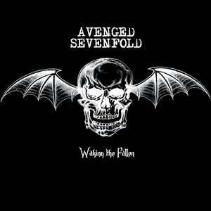
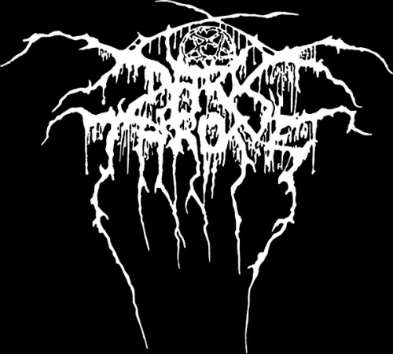
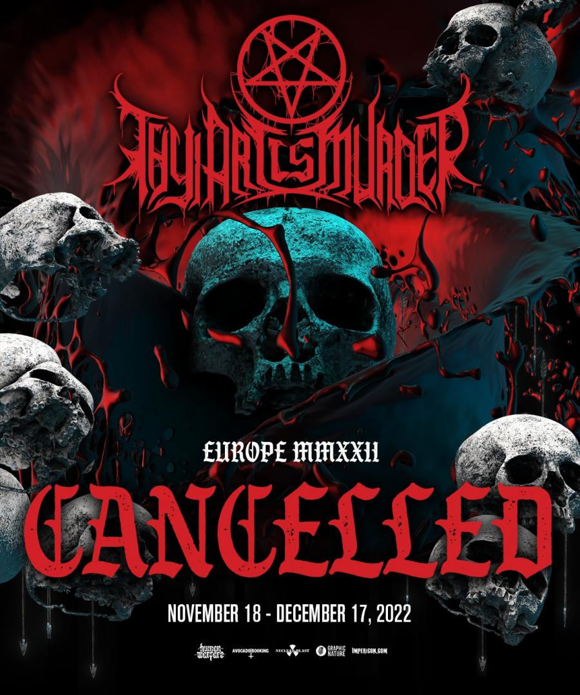

sleeping with sirens
Se formaron en 2009, en Orlando, Florida, con su primer álbum With Ears to See and Eyes to Hear lanzado en 2010, fusionando post-hardcore y pop‑punk; pronto alcanzó el puesto 7 en Billboard Heatseekers
A lo largo de los años, su sonido ha evolucionado, incursionando en géneros como metalcore, pop-rock y emo, sin perder su esencia emocional .
albums e integrantes
Han lanzado discos clave como Let's Cheers to This (2011), Feel (2013), Madness (2015), Gossip (2017), How It Feels to Be Lost (2019) y el más reciente Complete Collapse (2022)
Kellin Quinn – voz principal y teclados (único miembro fundador actual)
Justin Hills – bajo y coros.
Nick Martin – guitarra rítmica, coros (se unió en 2013)
Jack Fowler – guitarra líder (salió antes de Complete Collapse)
Matty Best – batería desde 2019, primeró con Complete Collapse


Sleeping With Sirens es una banda que ha sabido reinventarse manteniendo una conexión emocional potente con su audiencia. Con discos emblemáticos, cambios en su alineación y una versatilidad notable, siguen siendo un referente en la escena emo/post-hardcore, al tiempo que exploran nuevos caminos creativos y ofrecen música fresca tanto en solitario como en grupo.

Fusión de géneros:
Combina la brutalidad y técnica del death metal con la estructura y agresividad del metalcore.
Riffs y blast beats:
Incorpora riffs de guitarra característicos del death metal y ritmos rápidos de blast beat.
Breakdowns:
Elementos clave del metalcore, donde la música se ralentiza y se enfatiza la pesadez y la energía.
Vocales extremas:
Uso de guturales y screams para transmitir la agresividad del género.
Afinaciones bajas y técnicas vocales:
Afinaciones graves de las guitarras y técnicas vocales complejas son comunes.
Bandas destacadas:
Algunas bandas representativas del deathcore incluyen:
Suicide Silence: Considerada una de las bandas pioneras y más influyentes del género.
Whitechapel: Conocida por su sonido técnico y agresivo.
Chelsea Grin: Destaca por su brutalidad y breakdowns intensos.
Bring Me the Horizon: Una banda que ha evolucionado desde el deathcore hacia otros estilos, pero con raíces en el género.
Thy Art Is Murder: Una banda australiana con un sonido poderoso y técnico.
Lorna Shore: Una banda actual con un enfoque en la atmósfera y la intensidad.
Historia y evolución:
Orígenes:
El deathcore surgió a finales de la década de 1990 y principios de la de 2000, con bandas como Antagony y Despised Icon, aunque ellos mismos rechazaron la etiqueta.
Expansión:
El género ganó popularidad a mediados de la década de 2000, con bandas como Suicide Silence, All Shall Perish y Job for a Cowboy.
Evolución:
Con el tiempo, algunas bandas experimentaron con otros géneros, como el metal progresivo o el deathcore con influencias electrónicas.
Actualidad:
El deathcore sigue existiendo y evolucionando, con bandas nuevas que experimentan con diferentes sonidos dentro del género
CANCIONES DE POCAS TUERCAS
- if you can't hang
- king for a day
- luna 8 kalacas
- your betrayal
- bittersweet memories
- another life
- sweet decadence
- aire
- experiencia rasta
- metalcore
- deathcore
- trash metal
- power metal
- grindcore
- black noise
- goregrind
- black metal
- dsbm
- DSBM
- DSBM son las siglas de Depressive Suicidal Black Metal, un subgénero del black metal que se caracteriza por letras y temas centrados en la depresión, el suicidio y la desesperación, combinados con la atmósfera musical del black metal y a menudo elementos del doom metal
- GOREGRIND
- El goregrind es un subgénero del grindcore con influencias del death metal. Se puede situar su comienzo con la banda británica Carcass y con los estadounidenses Impétigo, ambos en el mundo de la música desde finales de la década de 1980
- BLACK METAL
- El black metal es un subgénero extremo del heavy metal, surgido a mediados de los años ochenta. Se caracteriza por estructuras musicales de atmósfera tétrica, tempos rápidos, guitarras con un protagonismo alto del tremolo picking, voces guturales agudas llamadas "shrieking" y, en ocasiones, calidad de grabación lo-fi
- METALCORE
- El metalcore es un subgénero musical que fusiona elementos del hardcore punk con el heavy metal, principalmente thrash metal y, en algunos casos, beatdown hardcore. Se caracteriza por la combinación de partes agresivas y rápidas con breakdowns (secciones lentas y pesadas) que invitan al pogo. El término "metalcore" surgió a mediados de los 90 para describir bandas como Earth Crisis, Deadguy e Integrity, quienes sentaron las bases del género